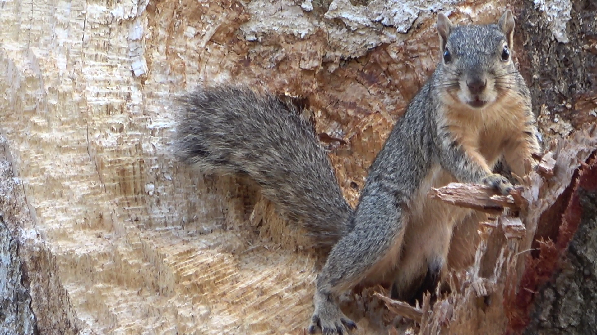
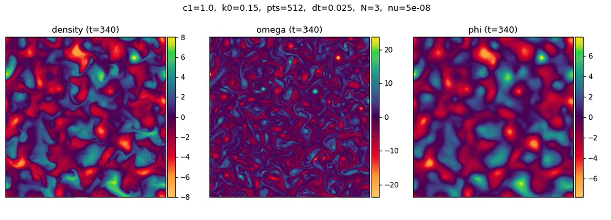
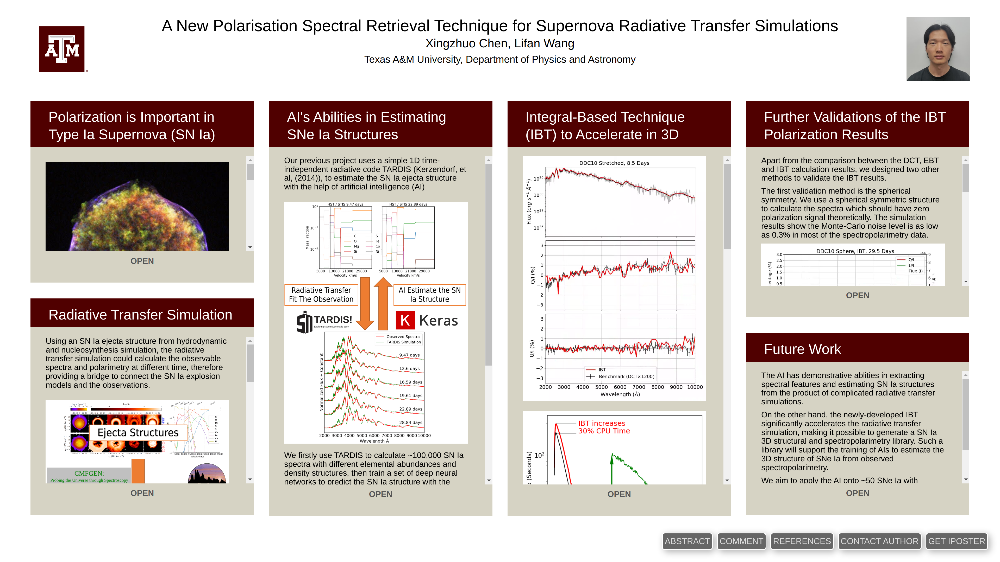

I am Xingzhuo Chen, my English name is Gesa. I am currently studying astronomy in Texas A&M University. Welcome to my personal webpage!
I like playing data science, riding bike, writting science fiction and pointing my camera to squirrels.
I encountered this creature on campus, I guess it is a gray squirrel?


I write a brief note of the Hasegawa-Wakatani (HW) equations. HW equations are used to explain the activity of ions and electrons in a Tokamak nuclear fusion device.

I attend the AAS243 meeting in New Orleans, and this is my interactive poster. I share the recent breakthrough in the three dimensional radiative transfer simulation and introduce the next steps in applying artificial intelligence in the supernova researches.

The above figure is a neural network structure, I use this neural network to determine the ejecta structure of ~100 type Ia supernovae, this is the second paper of "AIAI".
Spectrograph, an instrument includes the function of imaging and spectroscopy. Every time a spectrograph works, a big cube of data will be generated. Just like this picture of galaxy, every pixel is a spectrum. Such a powerful facility can tell the stellar population, gas, and dust, of a galaxy pixel-to-pixel. Me, Thomas Russell, and King utilized the public data from the best spectrograph in the world -- MUSE, to investigate the star populations in the type Ia supernova host galaxies. We developed an interesting algorithm to separate a galaxy into different stellar population groups, and study the relation between these groups and the supernova.

I presented "Buliding an Observatory on Antarctica" at the 27-th Astronomy on Tap in Bryan-College Station. Unfortunately I am not the one who really have been to Antarctica when I was at purple mountain observatory, I learnt a lot from these pioneers. Well, that place is the best location for observatories, and I am always prepared.
I prepared a short introduction about the math behind the neural network. It is quite simple and you can even try to build an example network using basic programming knowledge.
Me, Thomas Russell, and King found a radiative transfer simulation program -- TARDIS. This program is so incredably useful that can simulate a supernova spectra within a few CPU hours, given a 1-dimension supernova ejecta structure. We then use this program to simulate thousands of type Ia supernovae spectra with different element abundances, and train a neural network to predict element abundance from spectra. The trained neural network has let us found something, and we are still finding new things from the observed supernovae spectra.

For the next fantistic discovery.
{kind=link}
{kind=link}
{kind=link}